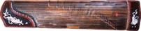
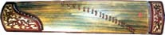
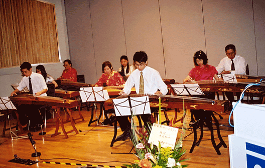
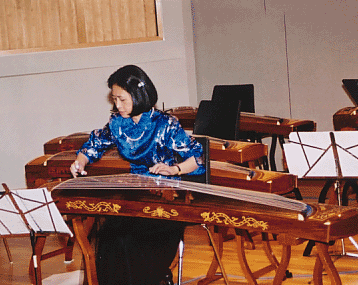
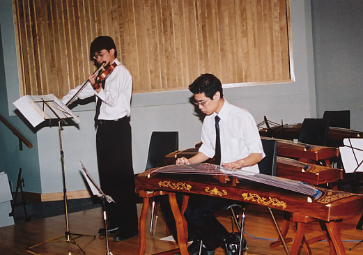
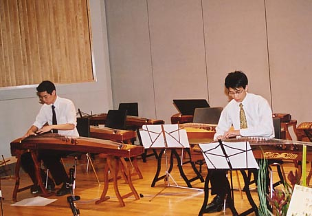

| The Edmonton Chinese Philharmonica Association (Ensemble) | |
| May 2002 Grant MacEwan College performance - Ruby Tin |  |
| May 1999 Grant MacEwan College performance - Ruby Tin |  |
| Ruby Tin's Chinese paintings | |
| Poster for 2002 GuZheng performance |
|  | Students of Ruby Tin
Performing at the Conference Theatre, Grant MacEwan College, May 10, 2001 |
|  | Performance at the Conference
Theatre, Grant MacEwan College, May 10, 2001
Ruby Tin GuZheng Solo |
|  | Performing at the Conference Theatre, Grant MacEwan College,
May 10, 2001
Dixon Wong, violin Felix Cheng, GuZheng |
|  | Performing at the Conference Theatre, Grant MacEwan College,
May 10, 2001
Felix Cheng, Justin Cheng, GuZheng |
|
|
|
| Interesting links |
Contact : rubytin@hotmail.com